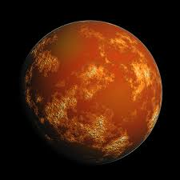

Phobos
The larger and closer of the two natural satellites of Mars. Both moons were discovered in 1877. A small, irregularly shaped object with a mean radius of 11 km, Phobos is seven times more massive than Mars's outer moon, Deimos.

Deimos
The smaller and outermore of the two natural satellites of the planet Mars with a mean radius of 6.2 km, the other being Phobos.